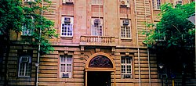
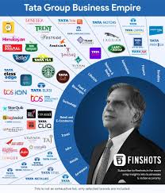
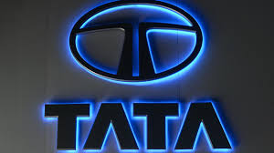

The Tata Group (/ˈtɑːtɑː/) is a group of companies headquartered in Mumbai, India.[4][5] Established in 1868, it is India's largest conglomerate, with products and services in over 150 countries, and operations in 100 countries.[6]
There are 29 publicly listed Tata Group companies with a combined market capitalisation of ₹32.2 trillion (US$386 billion) as of 9 July 2024.[7] Major affiliates include Tata Consultancy Services, Tata Motors, Tata Projects, Tata Power, Titan, Tata Steel, Air India, Indian Hotels Company, Tata Consumer Products, Voltas, Trent, Cromā and BigBasket.[8]


ABOUT

Jamshedji Nusserwanji Tata was born in 1839. Tata graduated from Elphinstone College in Bombay in 1858. Shortly afterwards, he joined his father's trading firm that dealt in general merchandise. There, the junior Tata took a special interest in developing trade with China.The Taj Mahal Palace Hotel in Mumbai is owned by Tata Groupwhen the American Civil War caused a boom in the Bombay cotton market, Tata and his father joined the Asiatic Banking Corporation. When the tide ebbed, Tata's credit was left desolate. Fortunately, the firm's credit was re-established during the next three years. A share in the lucrative contract for the commissariat of Napier's expedition to Abyssinia in 1868 restored the family fortune." In 1870 with Rs.21,000 capital, he founded a trading company.[9] Further, he bought a bankrupt oil mill at Chinchpokli and converted it into a cotton mill, under the name Alexandra Mill which he sold for a profit after two years. In 1874, he set up another cotton mill at Nagpur named Empress Mill. He dreamed of achieving four goals, setting up an iron and steel company, a unique hotel, a world-class learning institution, and a hydroelectric plant. During his lifetime, in 1903, the Taj Mahal Hotel at Colaba waterfront was opened making it the first hotel with electricity in British India.
CONTACT
Resident Director, Tata Limited 18, Grosvenor Place London SW1X 7HSc Phone:+44 (20) 7235 8281 Fax:+44 (20) 7235 8727 Email: tata@tata.co.uk Site: www.tata.com.Jamshedji Nusserwanji Tata was born in 1839. Tata graduated from Elphinstone College in Bombay in 1858. Shortly afterwards, he joined his father's trading firm that dealt in general merchandise. There, the junior Tata took a special interest in developing trade with China.The Taj Mahal Palace Hotel in Mumbai is owned by Tata Groupwhen the American Civil War caused a boom in the Bombay cotton market, Tata and his father joined the Asiatic Banking Corporation. When the tide ebbed, Tata's credit was left desolate. Fortunately, the firm's credit was re-established during the next three years. A share in the lucrative contract for the commissariat of Napier's expedition to Abyssinia in 1868 restored the family fortune." In 1870 with Rs.21,000 capital, he founded a trading company.[9] Further, he bought a bankrupt oil mill at Chinchpokli and converted it into a cotton mill, under the name Alexandra Mill which he sold for a profit after two years. In 1874, he set up another cotton mill at Nagpur named Empress Mill. He dreamed of achieving four goals, setting up an iron and steel company, a unique hotel, a world-class learning institution, and a hydroelectric plant. During his lifetime, in 1903, the Taj Mahal Hotel at Colaba waterfront was opened making it the first hotel with electricity in British India.